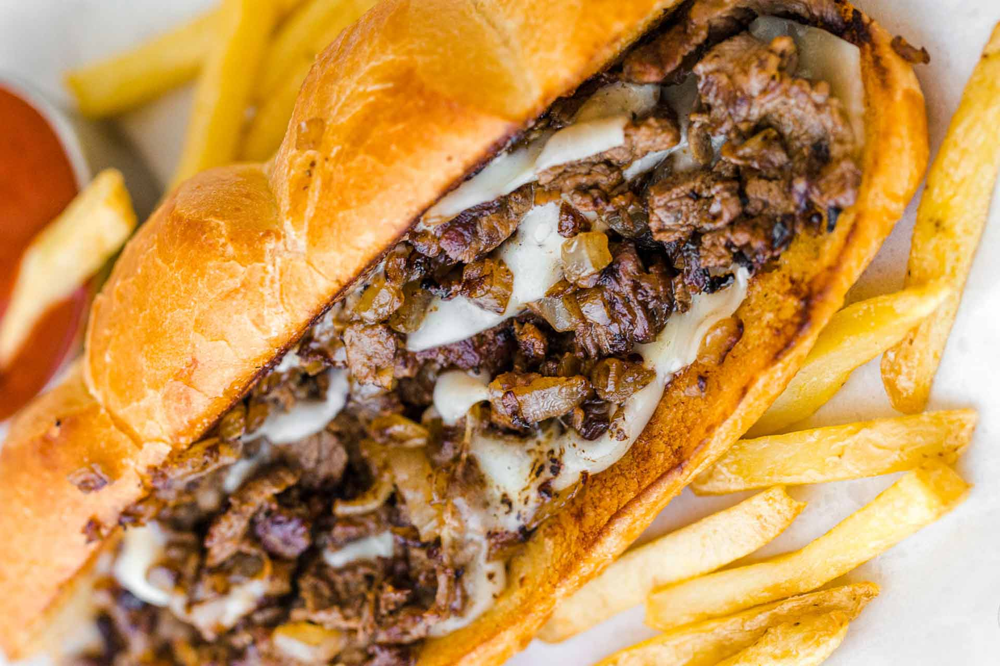

Cheesesteak

A Cheesesteak got to be looking like this
This recipe is going to cover how to make the steak, peppers, and onions needed to make your cheesesteak bussin.
If you follow this recipe to a tee you'll find a damn fine cheesesteak in your hands in twenty minutes flat
Ingredients
- Steak
- Onions
- Peppers
- Butter
- Cheese
- Baguette
Steps
- Place pan on stove and add steak once hot
- Cook steak until meat has browned
- Remove steak from pan and add butter
- Add peppers and onions and season to taste
- Once pepper and onions are cooked turn off heat
- Place bun in the oven to toast
- Add steak,followed by onions and peppers and then top with cheese